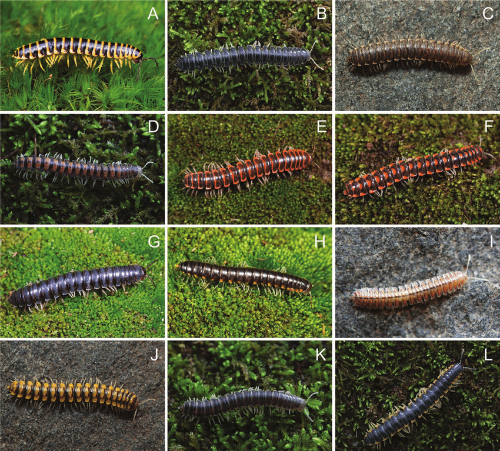
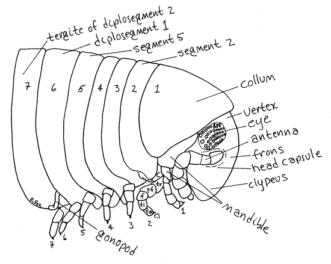
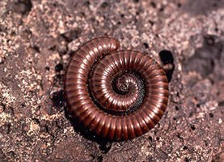

Millipedes are the most one of the kindest Arthropods compared to the vicious scopdendra centipede. They too are under the umbrella of the Arthropods just like the scolopendra centipede.
Millipedes bodies are more rounder and shaped compared to a scolopendra. The diagram shows the millipede has a lot more legs than the scoloprenda does, that is because they have two legs per segmant. Making them longer and appear to have a lot more legs. Although they have more legs than a centipede does they are not as fast as them and move rather slow.
As you can see by a close up of the head they don't have fangs like the centipede. They do have mandibles but does't have vemon but instead of vemon they release toxins at the side at the side of their bodies, which has very tiny holes called the ozoproes. These toxins would burn the exoskeletons of any insect to their skin and eyes of any larger predator. For their defence system they don't strike like a centipede does but coil up into a spirel, their bodies are so hard all around that is an protetive sheild.
 Back